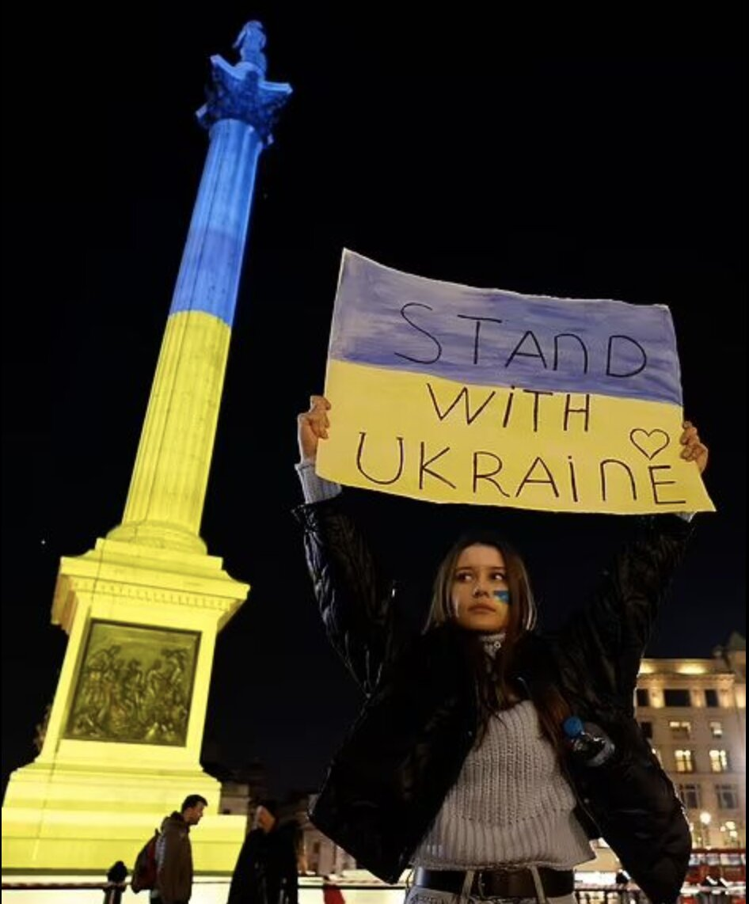

Ukraine har brug for vores støtte, mere end noget andet.
principper, og skabe global opmærksomhed.
Ved hjælp af digitale platforme, og sociale medier
kan vi øge muligheden for at dele budskaber,
principper, og skabe global opmærksomhed.

Holdninger i 2022
Holdninger i 2024
Hvorfor har Ukraine brug for støtte?
Krigen i Ukraine opstod, da Rusland i 2022 invaderede landet
og forsøgte at ændre dets suverænitet med magt.
Dette har forårsaget enorm ødelæggelse, tab af tusindvis af menneskeliv og gjort millioner af mennesker til flygtninge.
Infrastruktur og økonomi er blevet ødelagt, og Ukraine har brug for international støtte for at overleve og genopbygge.
Uden hjælp risikerer Ukraine at blive underlagt et autoritært regime, hvilket kunne sende et farligt signal om, at lande kan erobres med magt.
Det kunne føre til større destabilisering i Europa og andre steder, hvilket vil have langsigtede konsekvenser for global sikkerhed og demokrati.
Derfor er det afgørende at støtte Ukraine i denne kritiske tid.
Media vs Societal
Hvorfor sociale medier?
Sociale medier er en fantastisk måde at øge støtten til Ukraine på!
Det er her, Gen Z og millennials – de mest indflydelsesrige generationer på sociale medier – virkelig skinner.
De skaber trends, former meninger og har magten til at få budskaber til at gå viralt.
Og lad os ikke glemme: de er vores fremtid! At engagere dem via sociale medier er en kæmpe game-changer, der kan samle verden om at støtte Ukraine.